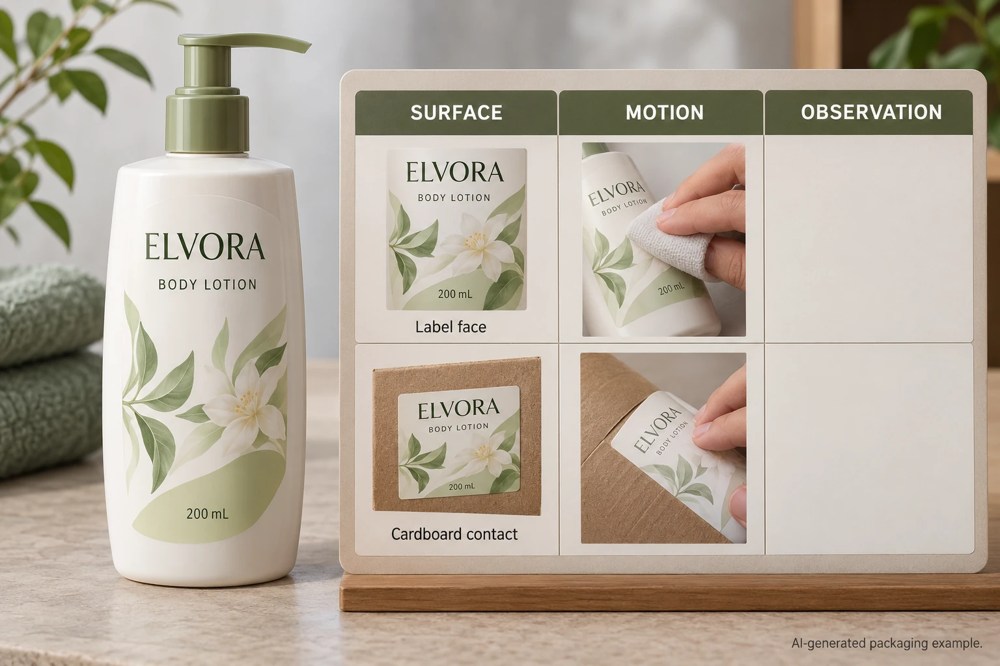

Write the event in physical terms
Identify what contacts the label: another bottle, a carton divider, a bag, a hand or another actual material. Record the relevant surface and how the contact happens. A single scrape while packing is not the same event as repeated movement in a shipping arrangement.
Ask the team reporting the concern to distinguish an observation from its explanation. A light mark, loss of printed detail, a changed reflection and a transferred material can require different review. Do not call every visible change ink failure without examination.
If the event has not happened and the team is planning approval, state the intended handling scenario as a requirement. A hypothetical risk is a valid reason to ask for evidence; it is not a customer defect story.
Evaluate the print and finish together
Avery's durable-material guide distinguishes material durability from the printing that must also hold up. That supports reviewing the complete printed label rather than relying on the face-stock name alone.
Ask the supplier to identify the proposed face, print and protective finish, and which construction its evidence represents. A blank-film swatch cannot establish the appearance of the finished printed panel after dry contact. A varnish or laminate name also needs a specific product and use scope.
The matte-laminate versus varnish guide helps compare construction routes. Here the narrower task is defining the dry-contact event and evidence that could justify acceptance, not declaring one finish universally superior.
Ask for a relevant method rather than inventing one
Where a formal test is needed, have the technical parties identify the method, equipment, conditioning and acceptance criterion. A number of rubs means little without the contact material, loading arrangement and interpretation. Do not borrow an arbitrary cycle count and call it an industry requirement.
For a practical packaging comparison, agree the sequence and conditions with the supplier and responsible packaging team. Keep an untreated reference, identify the evaluated sample and record what changed under the agreed procedure. State clearly if the comparison is informal and does not represent a standardized result.
Do not add product, water or cleaning fluid to a dry-contact evaluation without recording that it is a different condition. The waterproof-material guide addresses the broader construction and exposure discussion. One good result does not replace the other.
Build a contact-and-appearance record
Use this worksheet to turn a general request for resistance into an answerable sample brief.
| Record | Input | What it controls |
|---|---|---|
| Sample | Complete printed construction and reference | Which proposal is being evaluated |
| Contact | Actual counterface material and relevant condition | What touches the label |
| Event | Movement or packing sequence | Which handling scenario is represented |
| Method | Agreed procedure, technical owner and formal/informal status | What any reported result means |
| Appearance | Defined feature and accepted reference | What the reviewer should judge |
| Comparison | Consistent preparation and conditions | Which differences can be interpreted |
| Decision | Accepted scope, concern and next action | What may proceed and what remains open |
Start with the scenario and complete construction. Get the appropriate evaluation route, compare the relevant samples and record the result in descriptive terms supported by that method. If the counterface or movement changes, ask whether the previous evidence still applies.
Hold the requested dry-handling claim if its only support is an unrelated water-resistance statement. Hold an order-wide cause claim if the only evidence is one unexplained photograph. Obtain the missing event and sample information before choosing a correction.

Consider changing the contact as well as the label
A hypothetical issue arising from a particular packing divider may justify comparing a different supported packing arrangement alongside finish proposals. The packaging team should evaluate the complete route; a more elaborate label finish is not the only possible answer.
A regularly handled retail bottle can have a different requirement. If its appearance depends on a specific dark printed panel, the relevant complete construction deserves a focused review under the intended handling. A presentation sample kept untouched in a meeting room cannot settle that requirement.
For custom cosmetic labels, provide container details, artwork, dimensions, quantity per design and the actual dry-contact event. Include existing samples and method information. Use the inquiry form to prepare a message, then send records separately through email or WhatsApp. Ask for the handling evidence that matches the pack's journey.